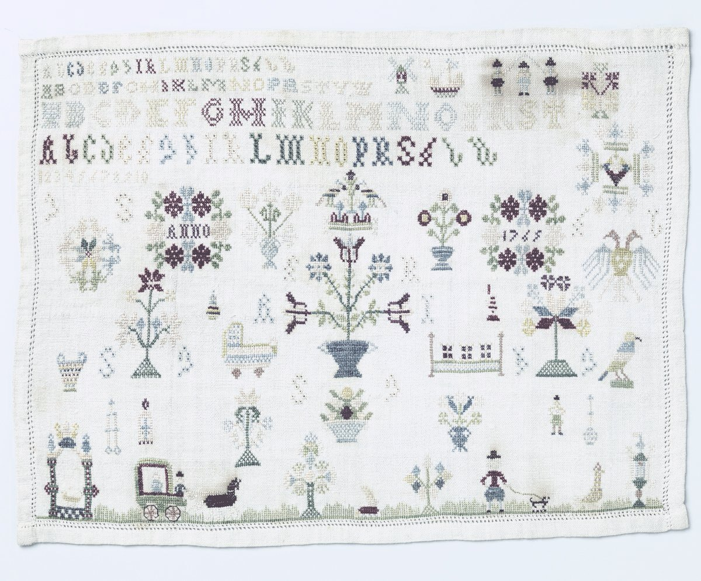

- База знаний
- Практики
- Основные практики
- Семейные «надо»
Практика·20 минут·без меня·основная
Семейные «надо»
Десять фраз «в нашей семье считалось, что…» и решение по каждой. Многие «должен» оказываются семейными правилами, которые никто не проверял, а названное правило можно выбрать заново.
На чём стоитЦенности в ACTранняяГенограммаопыт практиковТрансгенерационный подходранняяЦенности в ACT: студенты и участники лабораторных опытов; для переходов не проверялосьметки проверены 26.10.2026Почему так
Ценности в ACT ранняя мета-анализ
ACT в целом изучен хорошо, но это вся программа целиком. Ценности отдельно проверяли мало: короткие лабораторные задания и одно небольшое испытание на студентах.
Исследование: Levin и соавт., 2012 · на ком проверяли: студенты и участники лабораторных опытов; для переходов не проверялось
Генограмма опыт практиков опыт практиков
Психологическую генограмму как способ помощи никто не проверял. Есть маленькое испытание 1987 года у семейного врача: генограмма собрала больше сведений, но на его действия не повлияла.
Rogers, Cohn, 1987 · на ком проверяли: семейная медицина и семейная терапия; изучали точность записи, а не пользу для человека
Трансгенерационный подход ранняя систематический обзор
Передачу трудностей детям через воспитание и семейное молчание описывали, в основном у потомков беженцев, но данных мало (ранняя). Что травма наследуется биологически, у людей не доказано (спорная). Повторы дат и событий через поколения, «синдром предков» Шутценбергер, никто не проверял: беру только как язык для разговора.
Исследование: Sangalang, Vang, 2017; van IJzendoorn и соавт., 2003 · на ком проверяли: потомки беженцев (обзор 20 работ); дети и внуки людей, переживших Холокост
Метка говорит, насколько исследован метод, а не как он сработает у тебя. Что значат метки

- На руках
- Список наносного, то есть чужих «надо», и одно своё правило на замену.
- Откуда
- черновик наносного, то есть чужих «надо». Если про семью больно, пропусти.
- Это упражнение
- моё.
- В «Переходе»
- это неделя 3: Что тебе важно и что навязано — отсюда черновик списка наносного.
- Допиши фразу «В нашей семье считалось, что…» десять раз.
- Рядом с каждой поставь одно из трёх: оставляю, меняю или отпускаю.
- Для одного правила из «меняю» напиши свою версию.
Если не получается начать. Допиши первую фразу: «В нашей семье считалось, что деньги…».
…сначала работа, потом отдых
…о проблемах не говорят с чужими
…деньги должны лежать на чёрный день
…девочка должна быть удобной
Работа сначала: меняю. Не говорить с чужими: отпускаю. Чёрный день: оставляю, но в разумной сумме.
Отдых не награда за работу, а часть работы.
Рядом
Если нашлась ошибка или что-то устарело — напиши в Telegram. Тексты базы можно брать в работу со ссылкой.
Каждую практику можно сделать без меня. В «Переходе» я подбираю их под тебя, и найденное складывается в выбор дела и первый шаг. Как устроен «Переход» →